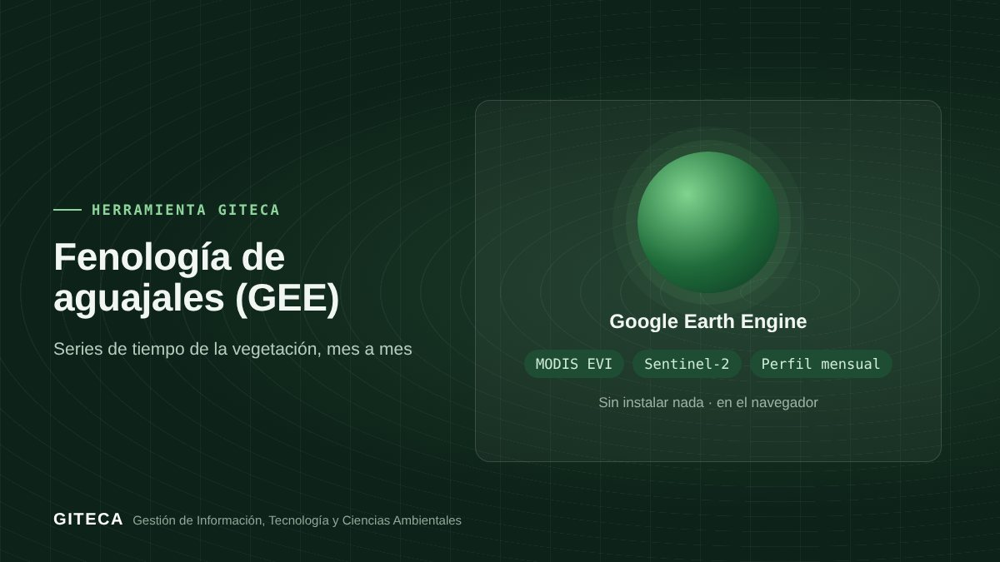

El pulso anual de los aguajales, visto desde el satélite
App de Google Earth Engine con series de tiempo EVI (MODIS) y NDVI (Sentinel-2) y el perfil mensual de aguajales y otros bosques.
Abrir la app en Earth Engine ↗Gratis, sin instalar nada.

¿Cómo cambia el verdor de un aguajal a lo largo del año, y entre un año y otro?
Los aguajales tienen ciclos marcados por el agua y el clima. Esta app arma series de tiempo de índices de vegetación para el periodo que elijas y el perfil mensual de tu área, para detectar cambios y apoyar la planificación del monitoreo.
Antes y ahora
El proceso de siempre
- Descargar imágenes de varios años y filtrar las nubes.
- Calcular los índices imagen por imagen.
- Armar la serie y el promedio mensual en una hoja de cálculo.
Con la herramienta
- Dibujas el polígono del aguajal y eliges el periodo.
- La app arma la serie EVI de MODIS y la de NDVI de Sentinel-2, con nubes enmascaradas por Cloud Score+.
- Ves el perfil mensual promedio y el NDVI mediano en el mapa.
Tiempos de referencia estimados por el equipo GITECA; varían según el tamaño del área y la experiencia del usuario.
Qué hace
- Serie de EVI de MODIS (250 m) y de NDVI de Sentinel-2.
- Nubes enmascaradas con Cloud Score+.
- Perfil mensual promedio de EVI y mapa de NDVI mediano.
- Ficha descargable en CSV, GeoJSON, KML o SHP.
Para quién es
Empieza en 3 pasos
- Abre la app en el navegador.
- Dibuja o elige tu área y el periodo.
- Revisa las series y el perfil mensual.
Fenología de aguajales (GEE)Gratis, sin instalar nada.
Abrir la app en Earth Engine ↗
Ten en cuenta: Los índices de vegetación reflejan el verdor del dosel, no la producción de frutos: contrasta con observaciones de campo. ¿Necesitas adaptarla a tu proyecto o capacitar a tu equipo? Escríbenos.